本站资源采集网络各大媒体平台，更新速度快且不带任何引流效果。如果你是在运营微信公众号,为用户提供找资源服务. 可免费接入本站资源搜索功能，为你的用户提供海量资源搜索服务，
配置截图演示
1、登录微信公众平台

2、点击 [ 开发 > 基本配置 ]
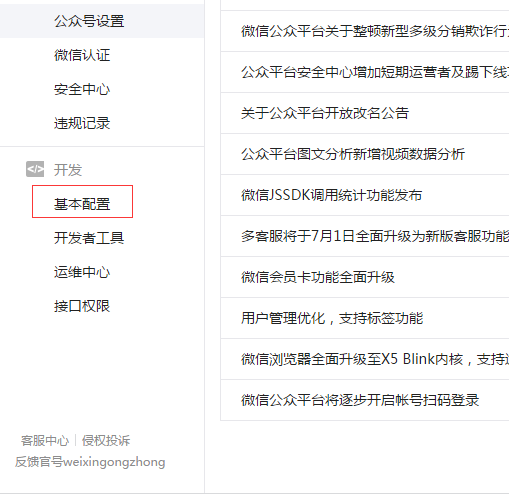
3、点击 [ 修改配置 ]
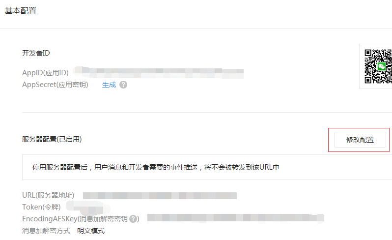
4、填写表单
URL填写： http://tb361.xyz/api.php/wechat
Token：s123456789
EncodingAESKey：随机生成
消息加解密方式：明文模式
Token：s123456789
EncodingAESKey：随机生成
消息加解密方式：明文模式
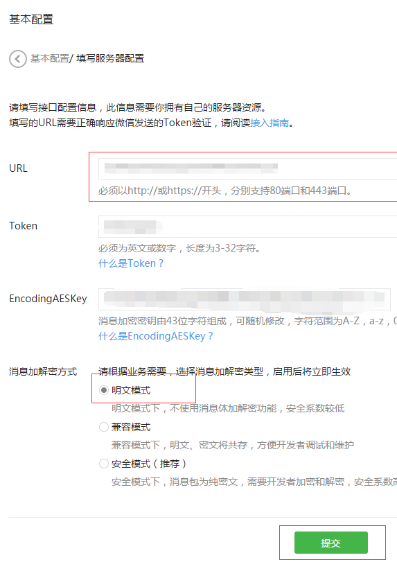
5、保存修改(配置未启用,请启用),5分钟左右配置生效。
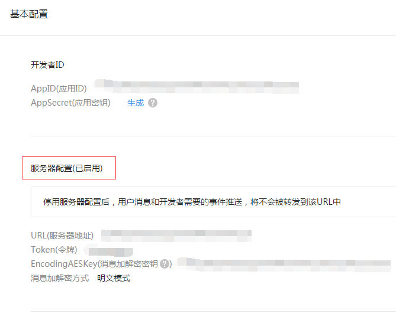
注意：个人订阅号启用接口后, 原设置菜单会被取消, 需要使用微信第三方平台添加, 比如：搜狐快站、微讯云端，具体请看下面操作，若不需要菜单可跃过。
自动回复与自定义菜单同时存在
搜狐快站操作演示：
1、打开搜狐快站
网址：https://www.kuaizhan.com
没有账号，创建一个，有账号，直接登录
网址：https://www.kuaizhan.com
没有账号，创建一个，有账号，直接登录
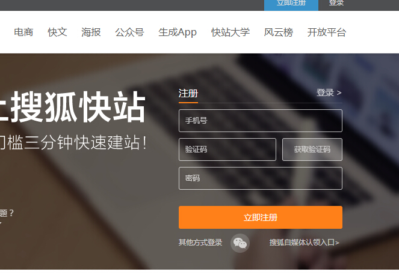
2、登录之后，首先需要创建站点，步骤如下：
a、点击新建站点(老用户页面不一样)
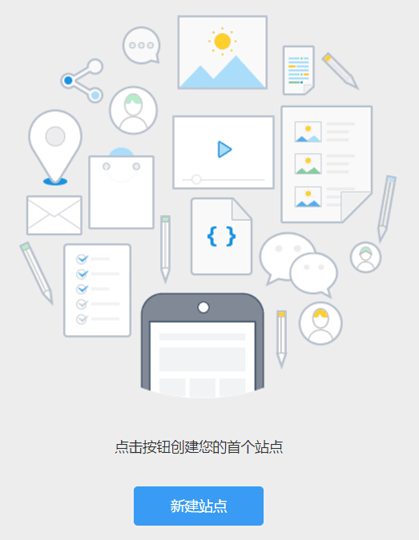
b、选择你需要的模板(可随意)
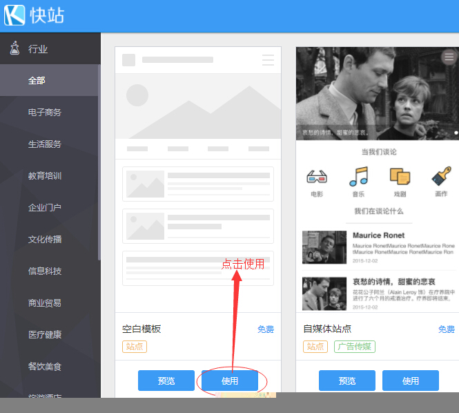
c、选择模板后点击右上方发布页面
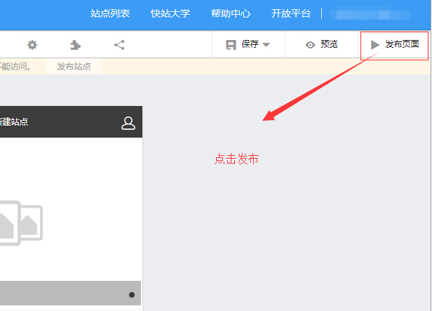

d、填写站点发布信息(可随意)
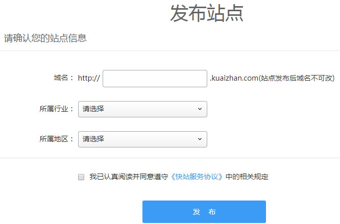
e、站点发布成功
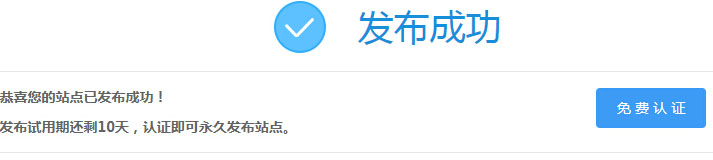
3、站点发布成功后，绑定公众号并设置菜单
a、点击公众号功能按钮
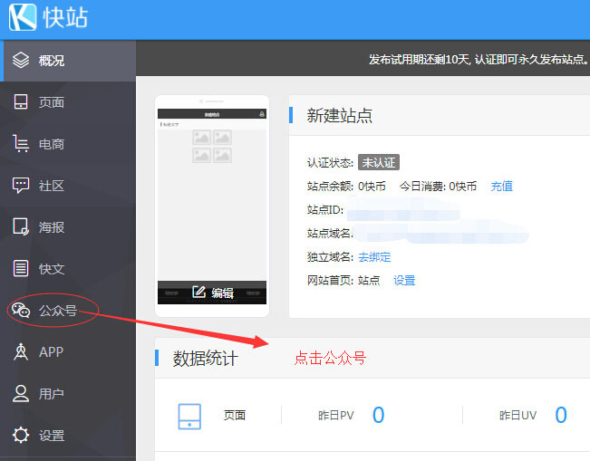
b、绑定好公众号后可进入菜单管理
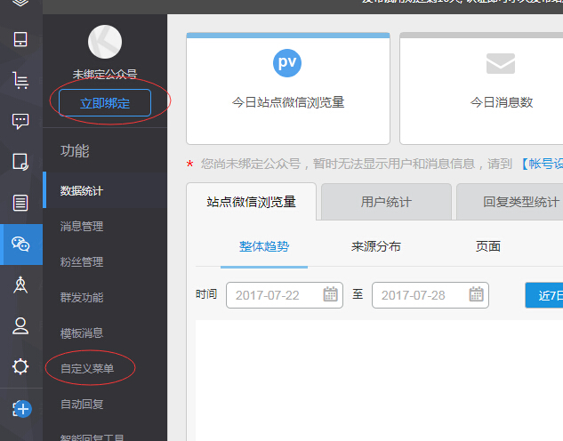
注意：自定义菜单需要跳转图文，先在搜狐快站的“图文消息编辑器”编辑【搜狐快站的“图文消息编辑器”【新建】的文章，跟公众号后台是同步的，不习惯的话，先新建一个图文，也可在公众号后台编辑】，再在自定义菜单功能里设置菜单即可。